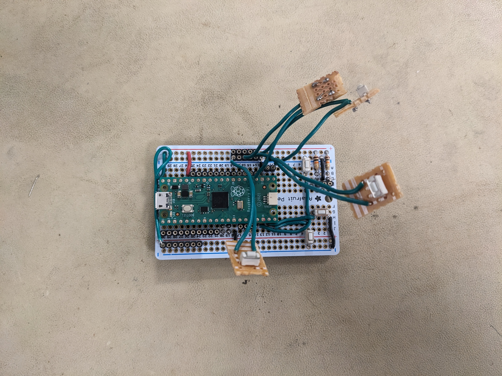

Subjective Software Results
Software-wise, we're very pleased with our result. While not as full-featured as we initially imagined, it still provides the configurability we wanted. Owing to its structure and consistency, it also provides a solid basis for further development.
Since we referenced the QMK driver for the PMW3389, we also looked at the larger state of that project. The code is very messy in places, and more importantly, it appears to only rely on polling, which precludes energy-saving measures. For example, it doesn't support interrupt-based reading of the PMW3389 at all. While these problems can be discounted by its origin as a keyboard firmware, and support for a wide range of microcontrollers, we believe that we present a better-engineered solution.
We are also proud that we got the PMW3389 to work reliably in an interrupt-based setting not managed by a full RTOS. Bringing up a poorly-documented sensor in a new environment was quite challenging!
effect of code quality practices
Throughout our testing, after introducing equeue and the initial period of TinyUSB testing, we got almost no full-lockups. This is something of a testament to the soundness of our design choices, which minimised the risk of at least forbidden memory accesses, and contained very few functions which could totally break our system.
After ironing out some initial issues with the sensor, and a scheduling logic error (which, crucially, did not lock up the system), we found it very easy to test our software, and get new components working. The event system essentially worked on first try. We encountered primarily logic errors, not anything unexpected.
extensibility
Other than the existing options for user configuration, we believe our design leaves ample room for user modification. Because input behaviour is not deeply embedded in interrupts or functions, instead in a set of structured tables in memory, they can more easily be mapped to a configuration file, or a UART interface to change parameters while the firmware is running, without an extra compilation. Such a feature would only have to change data in memory to, for example, define a chain as a new set of function pointers.
Since input processing is built on functions with the same signature and input data type, it is also possible to easily integrate a scripting interface. A Lua or other embedded interpreter, for example, could be called to accept a driver_event_t, process it based on a user-defined script, and return the result. The generality of input event handling is key to this.
Finally, the driver structure and separation of concerns enables new hardware to be integrated more smoothly. Instead of having to wade through the source to change the SPI instance for a sensor, it can be done through a simple change to its config struct. Very little hardware configuration is hard-coded. And new hardware drivers only need to queue data in the expected format and have appropriate initialisation functions.
event handling
The event handling code could be made more ergonomic and featureful. Work on it was somewhat deferred due to the software issues with the sensor, and, while providing ample opportunity for configuration, could be improved.
A large improvement would be relaxing the way state is handled. Currently, chainable functions essentially do not retain state. Having an explicit bank of memory used for state could help enable more interesting transformations, such as FSM-based decision making.
Also, we designed the event handling with very small maximum layer counts / chain lengths for demonstration purposes. In practice these could be relaxed, taking memory constraints into consideration.
Subjective Hardware Results
While the software went relatively well with what we did, there were a various number of deviations from the original plan. Starting off with the 3D model, there was the plan to do the full mouse, including the top shell cover, the piece meant to hold the joystick, and the piece meant to hold the side buttons. That unfortunately didn't happen due to timing with the 3D printers, and ultimately we did scrap the full idea of interchangeable parts as we wired everything into the PCB at the same time. Also the dimensions of design elements meant to hold items like the PCB, the sensor, and the kickstand for example were off by a bit despite us importing models of our circuit components, following tutorials, and following the data sheets in the case of the PMW3389 sensor that did give dimensions for a base that could hold the lens. This is most likely due to human error as there was a bit of period of relearning of Fusion that hindered the process, and the lid and main body of the mouse got printed by a 3D printer that had a faulty z-offset calibration that required constant adjustment of the bed for the first layer, leading to inconsistent layers. Ultimately it made pieces not fit, and we had to scrap the idea of the adjustable tilt in our demo, saving it for afterwards when discussing what we didn't get to accomplish.

The full mouse design with some of the interchangeable parts and the top shell cover.

The top shell cover that never got printed

The kickstand changing the angle of the mouse despite it not being connected to its proper hinge.
Due to those errors in the model and how things were wired, the usability was hit or miss. Due to the imprint for the lens not holding it, the pinout for the sensor's breakout board being strange as the holes were all gathered in one corner where it was difficult to solder, and the wires being too short, the PMW3389 sensor did not stay in place. Any wrong movement, and the sensor was off the lens. Even with taping down the entire component, it did not hold whenever we moved the mouse, especially as the 3D printed pieces did not keep together well. So, whenever we tried to use the mouse as any regular optical mouse, most of the time included us fixing the placement of the sensor so that it could scan the surface properly. When we did get it in place and it stayed, the mouse actually worked well. Though this is disregarding another design element: how we pllugged in the mouse. Initially we were going to experiment with a USB-C charger/breakout board to charge a battery that would power the mouse; however, first, the only battery we had was broken according to the charger, and second, we needed to keep the Pico plugged in to transfer data. So the charger/breakout board was scrapped, but with the orientation of the mouse versus the Pico, the setup led to us handling the mouse backwards to work with the cable we were using. It did make things awkward as the displacement of the mouse was inverted, but we managed.

The base piece of the mouse with the lens taped down to try to keep it in place (not 100% successful) 
The board with buttons attached.

The board with no buttons attached. The sensor uses the top right set of pins for SPI0, but it's a tight fit! The SIP socket on the left is for the encoder